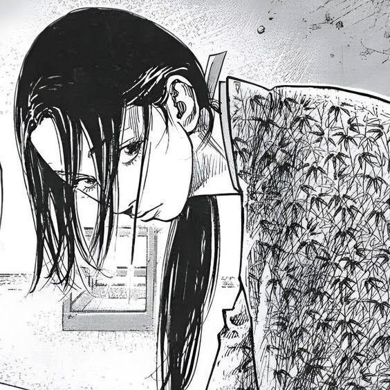

karinayoo
2 dias atrásA interface é bonita e fácil de navegar. A organização dos jogos torna tudo mais conveniente.

Recomendações, impressões e histórias de quem também encontra nos jogos um lugar para se conectar.
exemplo fictício baseado em 2.847 avaliações
A interface é bonita e fácil de navegar. A organização dos jogos torna tudo mais conveniente.
O conceito da Litch é moderno, rápido e lembra as grandes plataformas gamer.

A variedade é muito boa. Gosto especialmente da seção de jogos online.